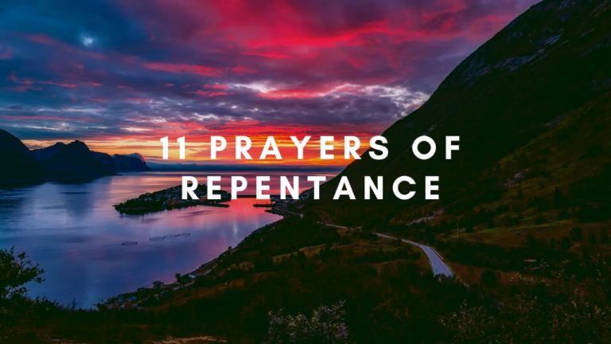
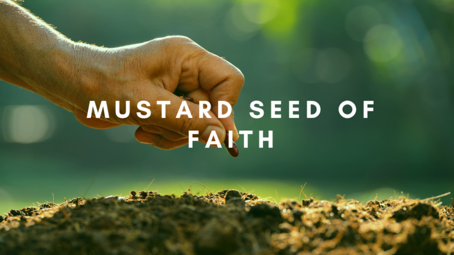
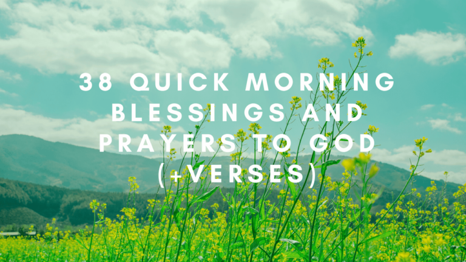

The Fourth Commandment: Remember The Sabbath
January 20, 2024 by Stephen Altrogge
What Is The Fourth
Commandment Of The 10 Commandments? In Deuteronomy 5:12, the fourth commandment states:
Commandment Of The 10 Commandments? In Deuteronomy 5:12, the fourth commandment states:
“Observe the Sabbath day …
.png) What Is The Third Commandment In The 10 Commandments? In Deuteronomy 5:11, we read, “You shall not take the name …
What Is The Third Commandment In The 10 Commandments? In Deuteronomy 5:11, we read, “You shall not take the name …
The Third Commandment: Don't Take God's Name In Vain
January 20, 2024 by Stephen Altrogge
What Is The Third Commandment In The 10 Commandments? In Deuteronomy 5:11, we read, “You shall not take the name …The Second Commandment: No Graven Images
January 20, 2024 by Stephen Altrogge
What Is The Second
Commandment Of The 10 Commandments? In Deuteronomy 5:8-10, the second commandment is:
Commandment Of The 10 Commandments? In Deuteronomy 5:8-10, the second commandment is:
stated as follows … "You
The First Commandment: You Shall Have No Other God's Before Me
January 20, 2024 by Stephen Altrogge
What Is The First
Commandment In The 10 Commandments? In Deuteronomy 5:7, Moses told the Israelites that the first
Commandment In The 10 Commandments? In Deuteronomy 5:7, Moses told the Israelites that the first
commandment...
God Is Good All The Time (Even In Hard Times)
January 20, 2024 by Stephen Altrogge
What Does “God Is Good All The Time” Mean? When we say that God is good, it means that He …
Wait In Patience On The Lord: Meeting God In The Stillness
January 20, 2024 by Stephen Altrogge
It is not easy to wait in patience on the Lord. We want what we want right now, with no …
11 Prayers Of Repentance To Bring You Near To God
December 22, 2024 by Stephen Altrogge

Prayer of Repentance For Unbelief Dear God, I come before you today to confess my unbelief. Forgive me for doubting …
Mustard Seed Of Faith: All That’s Needed For God To Do Great Things
December 21, 2024 by Stephen Altrogge

The phrase “mustard seed of faith” is a biblical metaphor that has long been the subject of much intrigue and …
14 Soul-Stirring Prayers For Protection
December 21, 2024 by Stephen Altrogge
It is not easy to wait in patience on the Lord. We want what we want right now, with no …
38 Quick Morning Blessings and Prayers To God (+Verses)
November 21, 2024 by Stephen Altrogge

Morning Blessings To God I bless you today, O God, for letting me sleep through the night and wake up …
12 Prayers Of Gratitude To God For 2024
September 16, 2024 by Stephen Altrogge
Prayer Of Gratitude For Blessings Heavenly Father, I thank you for the many blessings that you have given to me. …